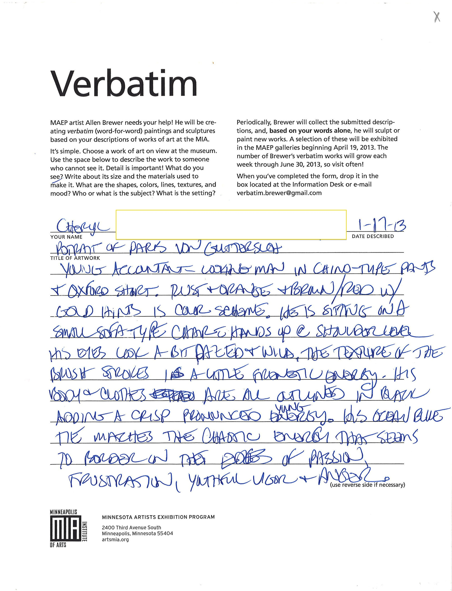
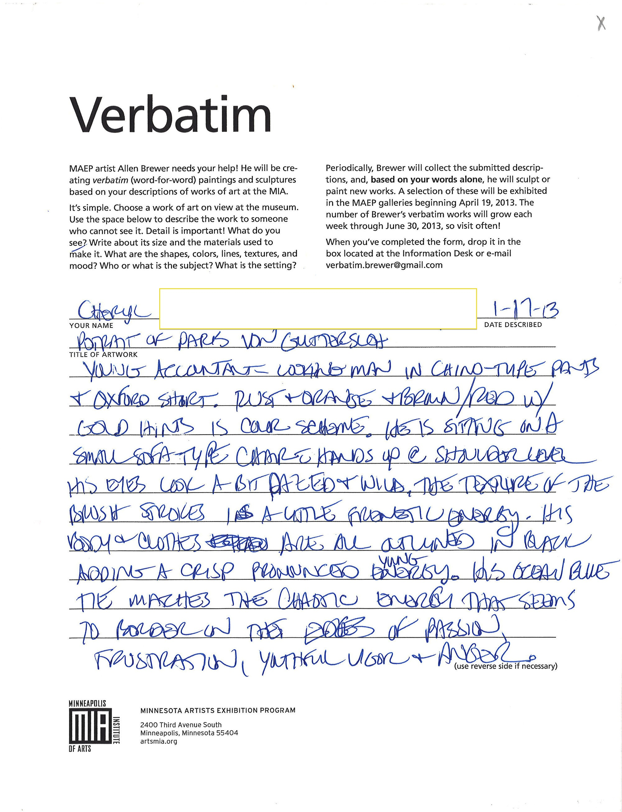
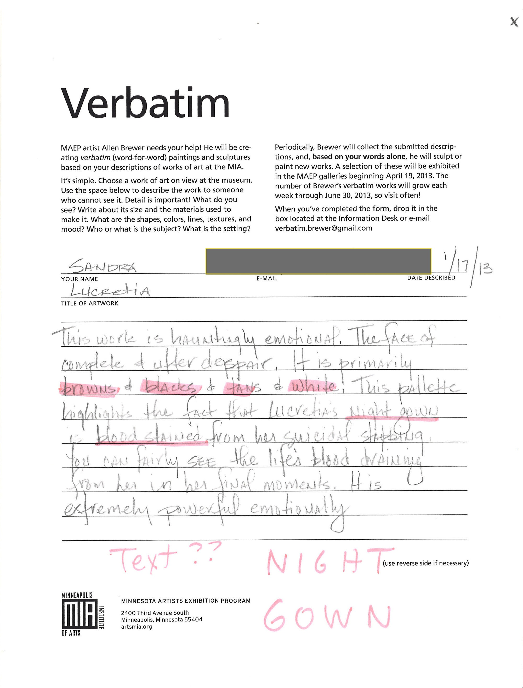
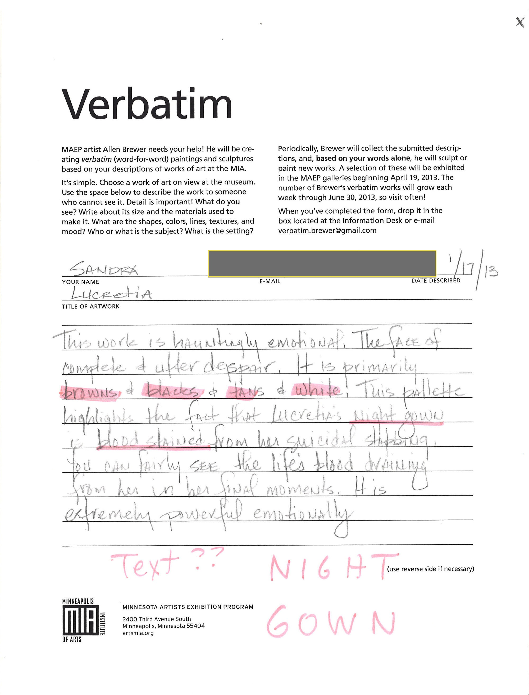

Young accountant-looking man in chino-type pants + oxford shirt. Rust+orange+brown/red w/ gold hints is color scheme. He is sitting on a small sofa-type chair, hands up @ shoulder level. His eyes look a bit dazed + wild. The texture of the brush strokes has a little frenetic energy. His body + clothes are all outlined in black adding a crisp pronounced young energy. His ocean blue tie matches the chaotic energy that seems to border on the ??? of passion, frustration, youthful vigor + anger.
Cheryl, 1/17/13
 


 
